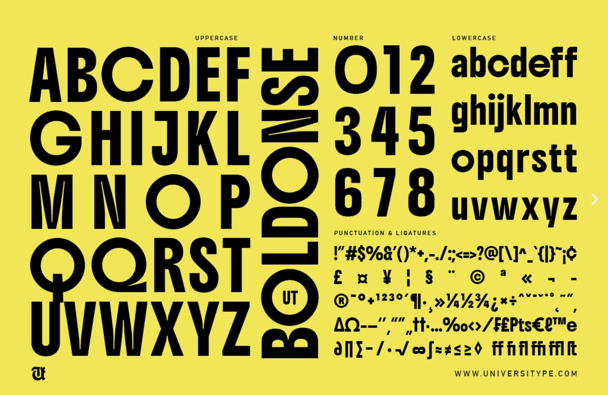
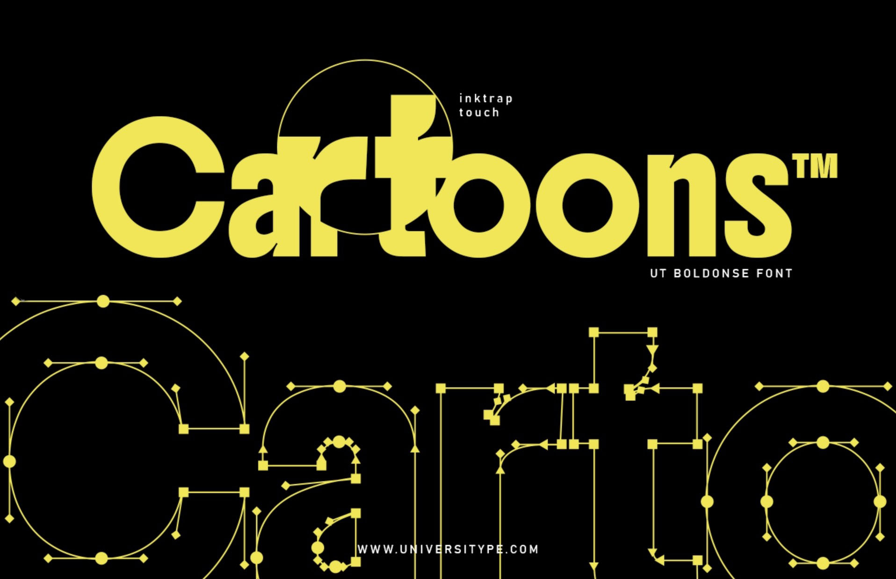
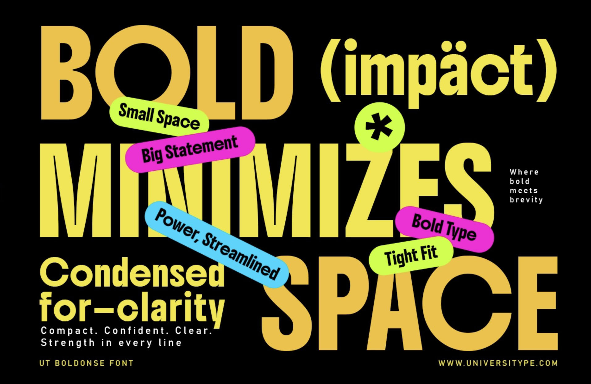

When it comes to making a big impact in design, UT Boldonse is here to help. This bold, condensed sans serif font is packed with personality and strength. It’s more than just a font—it’s the tool you need to make your designs stand out. Let’s explore why UT Boldonse is the perfect choice for your creative projects.
To contribute, see github.com/googlefonts/boldonse.


